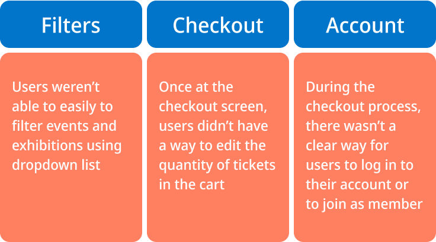

Redesign a responsive website for Tate Museum
By Ho Kei Leung
2 weeks | Solo project
Project overview:
Tate Museum is one of the most visited public art museum in the UK. Most users are arts professionals, students, teachers or tourists. Tate museum’s goal is to advertise exhibitions and events, provide museum information to patrons, and enable patrons to schedule visits.
The Problem:
Their website allowed visitors to locate what was on and book tickets for exhibitions and is fairly extensive and easy to use.
The app is not interactive and provided basic information to user. It doesn’t utilises its potential to enhance user experience in museum.
Goal:
Design a Tate Museum website to be user friendly by providing clear navigation and offering a fast event schedule process.
Also to create a complementary mobile app for immersive in museum experience.
Design Process
User Research Insight
I conducted user interviews, which I then turned into empathy maps to better understand the target user and their needs. I discovered that many target users treat visiting the Tate as a fun and inspirational experience when they need a culturally inclusive artistic adventure. However, many museum websites are confusing to navigate and their applications provide minimal information, which confuses many target users. When they are at the museum, they often feel lost and pressured to keep moving due to large crowds. Users often feel their time at the museum is not maximised as they spend a lot of time queuing and little time to interact with the collection they are interested in. Causing a normally enjoyable experience to become challenging for them, defeating their interest in exploring further.
Painpoints
Persona
Meet John
Graphic designer, 35 years old
“I like visiting museum! The physical experience makes it more memoarable and feel inspired!”
An agile creative who find way to be efficient—She/he is more adventurous and is open to try any type of product.
JOBS-TO-BE-DONE
When I visit museums, I want to immersed into the the environment and have all information in my hands, so I can get inspired, maximised my time while visiting and avoid queuing for too long.
User journey map
Information Architecture
User Flow
Early Concept & wireframes
Usability and findings

Accessibility consideration
Final design

Style Guides
Component Library
Summary and learnings
I learned how complementary designs on different devices can have a huge impact on the user experience. The most important takeaway for me is to always focus on the real needs of the user when coming up with design ideas and solutions. Going forward, I would like to identify any additional areas of need and ideate on new features, such as adding different language version. Also to conduct follow-up usability testing on the new website.